Latin American Wars of Independence: Terms
The United Provinces of South America was the original name of the state that emerged from the May Revolution and the early developments of the Argentine War of Independence. It comprised most of the former Viceroyalty of the Río de la Plata dependencies and, for most of the period, had Buenos Aires as its capital. It is best known, in Spanish literature, as Provincias Unidas del Río de la Plata, this being the most common (occasionally the official) name in use for the country, until the enactment of the 1826 Constitution. Moreover, this is currently one of the official designations for Argentina, as stated in the Argentine Constitution, Article 35. (wikipedia.org. Accessed August 6, 2011.)
.pdf (. . . )


The Admirable Campaign or Campaña Admirable was a military action led by Simón Bolívar in which the provinces of Mérida, Barinas, Trujillo and Caracas were conquered by the independentists. Its objective was to free Venezuela from Spanish control, which was accomplished in conjunction with Santiago Mariño's simultaneous campaign in the east. (wikipedia.org. Accessed August 6, 2011.)

The American Revolution was the political upheaval during the last half of the 18th century in which thirteen colonies in North America joined together to break free from the British Empire, combining to become the United States of America. They first rejected the authority of the Parliament of Great Britain to govern them from overseas without representation, and then expelled all royal officials. By 1774 each colony had established a Provincial Congress, or an equivalent governmental institution, to form individual self-governing states, but still within the empire. The British responded by sending combat troops to re-impose direct rule. Through representatives sent in 1775 to the Second Continental Congress, the new states joined together at first to defend their respective self-governance and manage the armed conflict against the British known as the American Revolutionary War (1775–83, also American War of Independence). Ultimately, the states collectively determined that the British monarchy, by acts of tyranny, could no longer legitimately claim their allegiance. They then severed ties with the British Empire in July 1776, when the Congress issued the United States Declaration of Independence, rejecting the monarchy on behalf of the new sovereign nation separate and external to the British Empire. The war ended with effective American victory in October 1781, followed by formal British abandonment of any claims to the United States with the Treaty of Paris in 1783. The American Revolution was the result of a series of social, political, and intellectual transformations in early American society and government, collectively referred to as the American Enlightenment. Americans rejected the oligarchies common in aristocratic Europe at the time, championing instead the development of republicanism based on the Enlightenment understanding of liberalism. Among the significant results of the revolution was the creation of a democratically-elected representative government responsible to the will of the people. However, sharp political debates erupted over the appropriate level of democracy desirable in the new government, with a number of Founders fearing mob rule. Many fundamental issues of national governance were settled with the ratification of the United States Constitution in 1788, which replaced the relatively weaker first attempt at a national government adopted in 1781, the Articles of Confederation and Perpetual Union. In contrast to the loose confederation, the Constitution established a strong federated government. The United States Bill of Rights (1791), comprising the first 10 constitutional amendments, quickly followed. It guaranteed many "natural rights" that were influential in justifying the revolution, and attempted to balance a strong national government with relatively broad personal liberties. The American shift to liberal republicanism, and the gradually increasing democracy, caused an upheaval of traditional social hierarchy and gave birth to the ethic that has formed a core of political values in the United States. (wikipedia.org. Accessed August 6, 2011.)

The Argentine Civil Wars were a series of internecine wars that took place in Argentina from 1814 to 1876. These conflicts were separate from the Argentine War of Independence (1810–1820), though they first arose during this period. The main antagonists were, on a geographical level, Buenos Aires Province and the other provinces of modern Argentina, and on a political level, between the Federal Party and the Unitarian Party. The central cause of the conflict was the excessive centralism advanced by Buenos Aires leaders and, for a long period, the monopoly on the use of the Port of Buenos Aires as the sole means for international commerce. Other participants at specific times included Uruguay, and the British and French empires, notably in the French blockade of the Río de la Plata of 1838 and in the Anglo-French blockade of the Río de la Plata that ended in 1850. (wikipedia.org. Accessed August 6, 2011.)

The Argentine War of Independence was fought from 1810 to 1818 by Argentine patriotic forces under Manuel Belgrano, Juan José Castelli and José de San Martín against royalist forces loyal to the Spanish crown. On July 9, 1816, an assembly met in San Miguel de Tucumán, declared full independence with provisions for a national constitution. (wikipedia.org. Accessed August 6, 2011.)
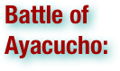

The Battle of Ayacucho was a decisive military encounter during the Peruvian War of Independence. It was the battle that sealed the independence of Peru, as well as the victory that ensured independence for the rest of South America. It is thus also considered the end of the Spanish American wars of independence. As of late 1824, Royalists still had control of most of the south of Peru as well as of Real Felipe Fort in the port of Callao. On December 9, 1824, the Battle of Ayacucho, or Battle of La Quinua, took place at Pampa de La Quinua, a few kilometers away from Ayacucho, near the town of Quinua between Royalist and Independentist forces. Independentist forces were led by Antonio José de Sucre, Simón Bolívar's lieutenant. Viceroy José de la Serna was wounded, and after the battle second commander-in-chief José de Canterac signed the final capitulation of the Royalist army. (wikipedia.org. Accessed August 6, 2011.)

The Battle of Boyacá (1819) in Colombia, then known as New Granada, was the battle in which Colombia acquired its definitive independence from Spanish Monarchy, although fighting with royalist forces would continue for years. Brigadier Generals Francisco de Paula Santander and José Antonio Anzoátegui led a combined republican army of Colombians and Venezuelans, complemented by the British Legion, to defeat in two hours a Royalist Colombian-Venezuelan forces led by Spanish Colonels José María Barreiro and Francisco Jiménez. Simón Bolívar credited the victory to the British Legion declaring that "those soldier liberators are the men who deserve these laurels" when offered laurels after the victory. The battle occurred 150 km from Bogotá in the Andes Mountains, in a place known as Casa de Teja, close to a bridge over the Teatinos River and 3 roads heading to Samaca, Motavita and Tunja, an area which is now part of the Boyacá Department. (wikipedia.org. Accessed August 6, 2011.)
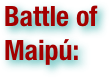

The Battle of Maipú was a battle fought near Santiago, Chile on April 5, 1818 between South American rebels and Spanish royalists, during the Chilean War of Independence. The Patriot rebels led by José de San Martín effectively destroyed the Spanish forces commanded by General Mariano Osorio, and completed the independence of Chile from Spanish domination. (wikipedia.org. Accessed August 6, 2011.)

The Battle of Pichincha took place on 24 May 1822, on the slopes of the Pichincha volcano, 3,500 meters above sea-level, right next to the city of Quito, in modern Ecuador. The encounter, fought in the context of the Spanish American wars of independence, pitted a Patriot army under General Antonio José de Sucre against a Royalist army commanded by Field Marshal Melchor Aymerich. The defeat of the Royalist forces loyal to Spain brought about the liberation of Quito, and secured the independence of the provinces belonging to the Real Audiencia de Quito, or Presidencia de Quito, the Spanish colonial administrative jurisdiction from which the Republic of Ecuadorwould eventually emerge. (wikipedia.org. Accessed August 6, 2011.)

The Bolivian war of independence began in 1809 with the establishment of Government Juntas in Sucre and La Paz, after the Chuquisaca Revolution and La Paz revolution. Those Juntas were defeated shortly after, and the cities fell again under Spanish control. The May Revolution of 1810 ousted the viceroy in Buenos Aires, which established its own Junta. Buenos Aires sent three military campaigns to the Upper Peru, headed by Juan José Castelli, Manuel Belgrano and José Rondeau, but the royalists ultimately prevailed over each one. However, the conflict grew into a guerrilla war, the War of the Republiquetas, preventing the royalists from strengthening their presence. Simón Bolívar and Antonio José de Sucre defeated the royalists at northern South America, and Sucre led the campaign that defeated the royalists for good. Bolivian independence was proclaimed in 1825. (wikipedia.org. Accessed August 6, 2011.)

The Bourbon Reforms (Reformas Borbónicas) were a set of economic and political legislation introduced by the Spanish Crown under various kings of the House of Bourbon throughout the 18th century. The reforms were intended to stimulate manufacturing and technology in order to modernize Spain. In Spanish America the reforms were designed to make the administration more efficient and to promote its economic, commercial, and fiscal development. The crown did this in hopes that it would have a positive effect on the economy of Spain. Furthermore, the Bourbon Reforms were intended to limit the power of Creoles and re-establish Spanish primacy over their colonies. (wikipedia.org. Accessed August 6, 2011.)

A cabildo or ayuntamiento was a former Spanish, colonial administrative council that governed a municipality. Cabildos were sometimes appointed, sometimes elected, but were considered to be representative of all land-owning heads of household (vecinos). The colonial cabildo was essentially the same as the one that had developed in medieval Castile. The cabildo was the legal representative of the municipality—and its vecinos—before the crown, therefore it was among the first institutions established by the conquistadors themselves after, or even before, taking over an area. For example, Hernán Cortés established La Villa Rica de la Vera Cruz to free himself from the authority of the Governor of Cuba. The word cabildo has the same Latin root (capitulum) as the English word "chapter," and in fact, is also the Spanish word for a cathedral chapter. Historically the term ayuntamiento was often preceded by the word excelentísimo (English: "most excellent") as a style of office, when referring to the council. This phrase is often abbreviated Exc.mo Ay.to (wikipedia.org. Accessed August 6, 2011.)


The Caribbean is a region consisting of the Caribbean Sea, its islands (most of which are enclosed by the sea), and the surrounding coasts. The region is located southeast of the Gulf of Mexico and North America, east of Central America, and to the north of South America. Situated largely on the Caribbean Plate, the region comprises more than 7,000 islands, islets, reefs, and cays. These islands, called the West Indies, generally form island arcs that delineate the eastern and northern edges of the Caribbean Sea.[4] These islands are called the West Indies because when Christopher Columbus landed there in 1492 he believed that he had reached to the west of The India (The Indian sub-continent). The region consists of the Antilles, divided into the larger Greater Antilles which bound the sea on the north, the Lesser Antilles on the south and east (including the Leeward Antilles), the Bahamas, and the Turks and Caicos Islands or the Lucayan Archipelago, which are in fact in the Atlantic Ocean north of Cuba, not in the Caribbean Sea. Geopolitically, the West Indies are usually regarded as a subregion of North America and are organized into 30 territories including sovereign states, overseas departments, and dependencies. From January 3, 1958, to May 31, 1962, there was a short-lived country called the Federation of the West Indies composed of ten English-speaking Caribbean territories, all of which were then UK dependencies. The West Indies cricket team continues to represent many of those nations. (wikipedia.org. Accessed August 6, 2011.)

Casta is a Portuguese and Spanish term used in seventeenth and eighteenth centuries mainly in Spanish America to describe as a whole the mixed-race people which appeared in the post-Conquest period. A parallel system of categorization based on the degree of acculturation to Hispanic culture, which distinguished between gente de razón (Hispanics) and gente sin razón (non-acculturated natives), concurrently existed and worked together with the idea of casta. (wikipedia.org. Accessed August 6, 2011.)

Caudillo is a Spanish word for "leader" and usually describes a political-military leader at the head of an authoritarian power. The term translates into English as leader orchief, or more pejoratively as warlord, dictator or strongman. Caudillo was the term used to refer to the charismatic populist leaders among the people. Caudillos have influenced a sizable portion of the history of Latin America. The term originally referred to military power: Indíbil and Mandonio, Viriathus, Almanzor (sometimes in the modern historiography), Don Pelayo and other fighters of the Reconquista, even Simón Bolivar, Francisco Franco, etc. . . The related caudillismo is a cultural phenomenon that first appeared during the early 19th century in revolutionary South America, as a type of militia leader with a charismatic personality and enough of a populist program of generic future reforms to gain broad sympathy, at least at the outset, among the common people. Effective caudillismo depends on a personality cult. The root of caudillismo lies in Spanish colonial policy of supplementing small cadres of professional, full-time soldiers with large militia forces recruited from local populations to maintain public order. Militiamen held civilian occupations but assembled at regular times for drill and inspection. Their salary from the Crown was a token; their recompense was in prestige, primarily because of the fuero militar ("military privilege"), that exempted them from certain taxes and obligatory community work assignments (compare the feudal corvée), and more significantly, exempted them from criminal or civil prosecution. Away from colonial capitals, the militias were at the service of the criollo landowners. (wikipedia.org. Accessed August 6, 2011.)

Chilean War of Independence was an armed conflict between pro-Independence criollos who sought political and economic independence from Spain and royalist criollos, who supported the continued allegiance to and permanence within the Spanish Empire of the Kingdom of Chile. Its beginning is traditionally dated as September 18, 1810 and, depending on what terms one uses to define the end, extended until 1821, when royalist forces were expelled from mainland Chile, or 1826, when the last Spanish troops surrendered and the Chiloé Archipelago was incorporated to the Chilean republic. A declaration of independence was officially issued by Chile on February 12, 1818 and formally recognized by Spain in 1840, when full diplomatic relations were established. The Chilean War of Independence was part of the more aroused Spanish American wars of independence. Independence did not have unanimous support among Chileans, who were divided between independentists and royalists. What started as an political movement among elites against the colonial power, ended as a full-fledged civil war. Traditionally, the process is divided into three stages: the Patria Vieja, 1810–1814; the Reconquista, 1814–1817; and the Patria Nueva, 1817-1823. (wikipedia.org. Accessed August 6, 2011.)

In the history of Brazil, Colonial Brazil comprises the period from 1500, with the arrival of the Portuguese, until 1815, when Brazil was elevated to kingdom alongside Portugal as the United Kingdom of Portugal, Brazil and the Algarves. During the over 300 years of Brazilian colonial history, the economic exploration of the territory was based first on brazilwood extraction (16th century), sugar production (16th–18th centuries), and finally on gold and diamond mining (18th century). Slaves, specially those brought from Africa, provided most of the working force of Brazilian economy. In contrast to the neighboring fragmented Spanish possessions, the Portuguese colony, built up by the Portuguese in Latin America, kept its territorial unity and linguistic integrity after the independence, giving rise to the largest country in the region – Brazil, an emerging superpower. (wikipedia.org. Accessed August 6, 2011.)

Colonialism is the establishment, maintenance, acquisition and expansion of colonies in one territory by people from another territory. It is a process whereby sovereignty over the colony is claimed by the metropole and the social structure, government, and economics of the colony are changed by colonists - people from the metropole. Colonialism is a set of unequal relationships: between the metropole and the colony, and between the colonists and the indigenous population. The colonial period normally refers to a period of history from the late 15th to the 20th century when European nation states established colonies on other continents. During this time, the justifications for colonialism included various factors such as the profits to be made, the expansion of the power of the metropole and various religious and political beliefs. Colonialism and imperialism were ideologically linked with mercantilism. (wikipedia.org. Accessed August 6, 2011.)

The Congress of Panama (often referred to as the Amphictyonic Congress, in homage to the Amphictyonic League of Ancient Greece) was a congress organized by Simón Bolívar in 1826 with the goal of bringing together the new republics of Latin America to develop a unified policy towards Spain. Held in Panama City from 22 June to 15 July of that year, the meeting proposed creating a league of American republics, with a common military, a mutual defense pact, and a supranational parliamentary assembly. It was attended by representatives of Gran Colombia (comprising the modern-day nations of Colombia, Ecuador, Panama, and Venezuela), Peru, the United Provinces of Central America (Guatemala, El Salvador, Honduras,Nicaragua, and Costa Rica), and Mexico. Chile and the United Provinces of South America (Argentina) declined to attend, out of mistrust of Bolívar's enormous influence. The Empire of Brazil did not send delegates, because it expected a hostile reception from its Hispanic neighbors due to its ongoing war with Argentina over modern Uruguay. The isolationist Paraguay (which refused previous delegates from Bolívar) was not invited. In the end, the grandly titled "Treaty of Union, League, and Perpetual Confederation" that emerged from the Congress was ultimately only ratified by Gran Colombia, and Bolívar's dream soon foundered irretrievably with civil war in that nation, the disintegration of Central America, and the emergence of national rather than continental outlooks in the newly independent American republics. The Congress of Panama also had political ramifications in the United States. President John Quincy Adams and Secretary of State Henry Clay wanted the U.S. to attend the Congress, which had only been invited due to pressure on Bolívar but, as Hispanic America had outlawed slavery, politicians from the Southern United States held up the mission by not approving funds or confirming the delegates. Despite their eventual departure, of the two U.S. delegates, one (Richard Clough Anderson, Jr.) died en route to Panama, and the other (John Sergeant) only arrived after the Congress had concluded its discussions. Thus Great Britain, which attended with only observer status, managed to acquire many good trade deals with Latin American countries. (wikipedia.org. Accessed August 6, 2011.)

A coup d'état—also known as a coup, putsch, and overthrow—is the sudden, extrajudicial deposition of a government, usually by a small group of the existing state establishment—typically the military—to replace the deposed government with another body; either civil or military. A coup d'état succeeds if the usurpers establish their dominance when the incumbent government fails to prevent or successfully resist their consolidation of power. If the coup neither fully fails nor achieves overall success, the attempted coup d'etat is likely to lead to a civil war. Typically, a coup d'état uses the extant government's power to assume political control of the country. In Coup d'État: A Practical Handbook, military historian Edward Luttwak says, "A coup consists of the infiltration of a small, but critical, segment of the state apparatus, which is then used to displace the government from its control of the remainder", thus, armed force (either military or paramilitary) is not a defining feature of a coup d'état. (wikipedia.org. Accessed August 6, 2011.)

The Criollos were a social class in the caste system of the overseas colonies established by Spain in the 16th century, especially in Latin America, composed of the locally born people of pure or mostly Spanish ancestry. The Criollo class ranked below that of the Iberian Peninsulares, the high-born (yet class of commoners) permanent residence colonists born in Spain. But Criollos were higher status/rank than all other castes—people of mixed descent, Amerindians, and enslaved Africans. According to the casta system, a criollo could have up to 1/8 (one great-grandparent or equivalent) Amerindian, ancestry and not lose social place (see Limpieza de sangre). In the 18th- and early 19th centuries, changes in Madrid's policies towards her colonies (and their polyglot of peoples) led to tensions between the Criollos and the Peninsulares. The growth of indigenous Criollo political and economic strength in their separate colonies coupled with their global geographic distribution, and led them to each evolve a separate (both from each other and Spain) organic national personality and viewpoint. Criollo nationalists were the main supporters of the Spanish American wars of independence. The term Criollo is often translated into English as Creole. However, the word "creole" is also applied to many ethnic groups around the world who have no historic connection to Spain or to any colonial system. Indeed, many of those creole peoples were never a distinct social caste, and were never defined by purity of descent. (wikipedia.org. Accessed August 6, 2011.)

Cuban War of Independence (1895–1898) was the last of three liberation wars that Cuba fought against Spain, the other two being the Ten Years' War (1868–1878) and the Little War (1879–1880). The final three months of the conflict escalated to become the Spanish-American War. (wikipedia.org. Accessed August 6, 2011.)
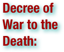

The Decree of War to the Death, in Spanish Decreto de Guerra a Muerte, was a decree issued by the South American separatist leader, Simón Bolívar, which permitted murder and any atrocities whatsoever to be committed against civilians born in Spain (or the Canary Islands), other than those actively assisting South American independence, and furthermore exonerated Latin Americans who had already committed such murders and atrocities. The phrase "War to the Death" was used as a euphemism for this situation. The decree was an explicit call to use terror tactics in Bolívar's attempt to maintain Venezuelan independence in the war with Spain, since he felt that the Spanish Army's use of atrocities against those who supported the First Republic of Venezuela had contributed decisively to its defeat. Bolívar promulgated the decree on June 15, 1813 in the Venezuelan city of Trujillo. (wikipedia.org. Accessed August 6, 2011.)
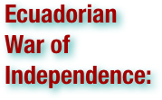

The Ecuadorian War of Independence was fought from 1820 to 1822 between several South American armies and Spain over control of the lands of the Royal Audience of Quito, a Spanish colonial administrative jurisdiction from which would eventually emerge the modern Republic of Ecuador. The war ended with the defeat of the Spanish forces at the Battle of Pichincha on May 24, 1822, which brought about the independence of the entire Presidencia de Quito. The Ecuadorian War of Independence is part of the Spanish American wars of independence fought during the first two decades of the 19th century. (wikipedia.org. Accessed August 6, 2011.)

The Empire of Brazil was a 19th-century state that broadly comprised the territories which form modern Brazil. Its government was a representative parliamentary constitutional monarchy under the rule of Emperors Dom Pedro I and his son Dom Pedro II, both members of the House of Braganza—a branch of the thousand-year-old Capetian dynasty. A colony of the Kingdom of Portugal, Brazil became the seat of the Portuguese colonial Empire in 1808, when the Portuguese regent, later King Dom João VI (John VI), fled from Napoleon I's invasion of Portugal and established himself and his government in the Brazilian city of Rio de Janeiro. João VI later returned to Portugal, leaving his eldest son and heir, Pedro, to rule Brazil as regent. On 7 September 1822, Pedro declared the independence of Brazil and, after waging a successful war against his father's kingdom, was acclaimed on 12 October as Pedro I, the first Emperor of Brazil. The new country was huge but sparsely populated and ethnically diverse. Unlike most of its Hispanic republic neighbors, Brazil had political stability, freedom of speech, respect for civil rights and vibrant economic growth. Its bicameral parliament was elected under comparatively democratic methods for the era, as were the provincial and local legislatures. This led into a long ideological conflict between Pedro I and a sizable parliamentary faction over the role of the monarch in the government. He also faced other obstacles; the unsuccessful Cisplatine War against the neighboring United Provinces of South America led to the secession of a Brazilian province (later to become Uruguay) in 1828. Despite his role in Brazilian independence, he became the king of Portugal in 1826 but immediately abdicated in favor of his eldest daughter. Two years later her throne was usurped by Pedro I's younger brother. Unable to deal with both Brazilian and Portuguese affairs, Pedro I abdicated on 7 April 1831 and immediately departed for Europe to restore his daughter to her throne. Pedro I's successor was his five-year-old son, Pedro II. As the latter was still a minor, a weak regency was created. The power vacuum resulting from the absence of a ruling monarch as the ultimate arbiter in political disputes led to regional civil wars between local factions. Having inherited an empire on the verge of disintegration, Pedro II, once declared of age, managed to bring peace and stability to the country, which eventually became an emerging international power. Brazil was victorious in three international conflicts (the Platine War, the Uruguayan War and the Paraguayan War) under Pedro II's rule, and it prevailed in several other international disputes and domestic strifes. With prosperity and economic development came an influx of European immigration, including Protestants and Jews, although Brazil remained mostly Catholic. Slavery, which had initially been widespread, was restricted by successive legislation until its final abolition in 1888. Brazilian visual arts, literature and theater developed during this time of progress. Although heavily influenced by European styles that ranged from Neoclassicism to Romanticism, each concept was adapted to create a culture that was uniquely Brazilian. Despite the fact the last four decades of Pedro II's reign were marked by continuous internal peace and economic prosperity, he personally had no desire to see the monarchy survive beyond his lifetime. As the Emperor grew older, he made no effort to maintain support for the institution. Since he lacked viable heirs (the next in line was his daughter Isabel, and both Pedro II and the ruling classes considered a female monarch unacceptable) the Empire's political leaders believed that there was no reason to defend the monarchy. Despite the lack of enthusiasm among most Brazilians for adopting a republican form of government, on 15 November 1889, after a 58-year reign, the Emperor was overthrown in a sudden coup d'état that had almost no support outside a clique of military leaders whose goal was the formation of a republic headed by a dictator. (wikipedia.org. Accessed August 6, 2011.)

The Age of Enlightenment came to Spain in the eighteenth century with a new Bourbon dynasty after the decay of the Spanish economy, bureaucracy, and empire in the latter years of the former Habsburg dynasty. This period of reform and 'enlightened despotism' focused on modernizing the Spanish government, infrastructure, and institutions, culminating in the rule of King Charles III and the work of his minister, José Moñino, count of Floridablanca. The century began with the War of the Spanish Succession over the ascension of a relation of Louis XIV of France to the throne of Spain and ended with the Napoleonic Wars in which Spain would become a bloody battleground. Charles III's successors, fraught by war, foreign intervention, unrest in the empire, corruption, and the pain of reform, would face an increasingly restive and unstable Spain, the painful consequences of which would become the civil wars that dominated Spain in the nineteenth century. (wikipedia.org. Accessed August 6, 2011.)

The Federal Republic of Central America, known as the United Provinces of Central America in its first year of creation, was a sovereign state in Central America, which consisted of the territories of the former Captaincy General of Guatemala. A republican democracy, it existed from July 1823 to 1841. . . The republic consisted of the states of Guatemala, El Salvador, Honduras, Nicaragua, and Costa Rica (Panama was part of Bolivar's Republica de Colombia in 1821). In the 1830s, an additional sixth state was added – Los Altos, with its capital in Quetzaltenango – occupying parts of what are now the western highlands of Guatemala and Chiapas state in southern Mexico. Although the new nation was now independent of Spain, it had been annexed by the First Mexican Empire. The annexation was the focus of disagreement, some seeing the Mexican constitution with its abolition of slavery and establishment of free trade as an improvement over the status quo. During the period of 1838–1840, the federation engaged in civil war by Conservatives fighting against the Liberals. Without a sustained struggle for independence to cement a sense of national identity, the various political factions were unable to overcome their ideological differences and the federation dissolved after a series of bloody conflicts. (wikipedia.org. Accessed August 6, 2011.)
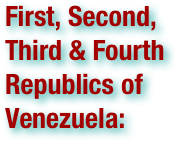

The First Republic of Venezuela (Primera República de Venezuela in Spanish) was the first independent government of Venezuela, lasting from 19 April 1810, to 25 July 1812. The period of the First Republic began with the overthrow of the Spanish colonial authorities and the establishment of a junta in Caracas, initiating the Venezuelan War of Independence, and ended with the surrender of the republican forces to the Spanish Captain Domingo de Monteverde. The congress of Venezuela declared the nation's independence on 5 July 1811, and later wrote a constitution for it. In doing so, Venezuela is notable for being the first Spanish American colony to declare its independence. . . The Second Republic of Venezuela (Segunda República de Venezuela in Spanish) is the term used by historians for the reestablished Venezuelan Republic declared by Simón Bolívar on August 7, 1813. This declaration followed the defeat of Domingo Monteverde by Bolívar during the Admirable Campaign in the west and Santiago Mariño in his campaign in the east. The republic came to an end in the following year, after a series of defeats at the hands of José Tomás Boves. . . It is during this period that the term "Republic of Venezuela" is officially used by Simón Bolívar's government. During the First Republic, upon which Bolívar rested the legitimacy of his actions, the government referred to the Venezuelan state as either the "American Confederation of Venezuela" or the "United Provinces of Venezuela" in the Declaration of Independence (both terms are used interchangeably), or as the "United States of Venezuela" (a term used interchangeably with "the Confederation") in the Constitution of 1811. Historians use the term Third Republic of Venezuela to refer to the period from about 1817 to 1819, when a rump government, organized by Bolívar began functioning in the Venezuelan Llanos. The year before, various Venezuelan guerilla forces managed to permanently establish themselves in the Llanos and captured the city of Angostura, which became their headquarters. This period culminated with the formation of the Congress of Angostura, which wrote a new constitution for Venezuela, replacing the one from 1811, which in theory, was still valid, although suspended since the collapse of the First Republic in 1812. At the end of 1819 the Angostura Congress decreed the union of Venezuela with New Granada in a new Republic of Colombia, (Gran Colombia) bringing an end to the Third Republic. After the dissolution of Gran Colombia, Venezuela became once again the Republic of Venezuela, and although undergoing various changes in constitutions and forms of government, Venezuela permanently maintained its independence from this moment on. This period is known as the Fourth Republic. (wikipedia.org. Accessed August 6, 2011.)

The French Revolution (1789–1799) was a period of radical social and political upheaval in French and European history. The absolute monarchy that had ruled France for centuries collapsed in three years. French society underwent an epic transformation as feudal, aristocratic and religious privileges evaporated under a sustained assault from left-wing political groups and the masses on the streets. Old ideas about hierarchy and tradition succumbed to new Enlightenment principles of citizenship and inalienable rights. The French Revolution began in 1789 with the convocation of the Estates-General in May. The first year of the Revolution witnessed members of the Third Estate proclaiming the Tennis Court Oath in June, the assault on the Bastille in July, the passage of the Declaration of the Rights of Man and of the Citizen in August, and an epic march on Versailles that forced the royal court back to Paris in October. The next few years were dominated by tensions between various liberal assemblies and a right-wing monarchy intent on thwarting major reforms. A republic was proclaimed in September 1792 and King Louis XVI was executed the next year. External threats also played a dominant role in the development of the Revolution. The French Revolutionary Wars started in 1792 and ultimately featured spectacular French victories that facilitated the conquest of the Italian peninsula, the Low Countries and most territories west of the Rhine – achievements that had defied previous French governments for centuries. Internally, popular sentiments radicalized the Revolution significantly, culminating in the rise of Maximilien Robespierre and the Jacobins and virtual dictatorship by the Committee of Public Safety during the Reign of Terror from 1793 until 1794 during which between 16,000 and 40,000 people were killed. After the fall of the Jacobins and the execution of Robespierre, the Directory assumed control of the French state in 1795 and held power until 1799, when it was replaced by the Consulate under Napoleon Bonaparte. The modern era has unfolded in the shadow of the French Revolution. The growth of republics and liberal democracies, the spread of secularism, the development of modern ideologies and the invention of total war all mark their birth during the Revolution. Subsequent events that can be traced to the Revolution include the Napoleonic Wars, two separate restorations of the monarchy and two additional revolutions as modern France took shape. In the following century, France would be governed at one point or another as a republic, constitutional monarchy and two different empires (the First and Second). (wikipedia.org. Accessed August 6, 2011.)

Gran Colombia, is a name used today for the state that encompassed much of northern South America and part of southern Central America from 1819 to 1831. This short-lived republic included the territories of present-day Colombia, Venezuela, Ecuador, and Panama. The first three were the successor states to Gran Colombia at its dissolution. Panama seceded from Colombia in 1903. Since Gran Colombia's territory corresponded more or less to the original jurisdiction of the former Viceroyalty of New Granada, it also claimed the Caribbean coast of Costa Rica, the Mosquito Coast, Guayana Esequiba in Guyana and parts of what are now Peru and Brazil. Its existence was marked by a struggle between those who supported a centralized government with a strong presidency and those who supported a decentralized, federal form of government. At the same time, another political division emerged between those who supported the Constitution of Cúcuta and two groups who sought to do away with the Constitution, either in favor of breaking up the nation into smaller republics or maintaining the union but creating an even stronger presidency. The faction that favored constitutional rule coalesced around Vice-President Francisco de Paula Santander, while those who supported the creation of a stronger presidency were led by President Simón Bolívar. The two men had been allies in the war against Spanish rule, but by 1825, their differences had become public and were an important part of the political instability from that year onward. (wikipedia.org. Accessed August 6, 2011.)

The Grito de Dolores ("Cry of Dolores") also known as El Grito de la Independencia ("Cry of Independence"), uttered from the small town of Dolores, near Guanajuato on September 16, 1810 is the event that marks the beginning of the Mexican War of Independence and is the most important national holiday observed in Mexico. The "Grito" was the pronunciamiento of the Mexican War of Independence by Miguel Hidalgo y Costilla, a Roman Catholic priest. (wikipedia.org. Accessed August 6, 2011.)


The Haitian Revolution (1791–1804) was a period of conflict in the French colony of Saint-Domingue, which culminated in the mass murder of white people there and the founding of the Haitian republic. Although hundreds of rebellions occurred in the New World during the centuries of slavery, only the St. Domingue Slave Revolt, which began in 1791, was successful in achieving permanent independence under a new nation. The Haitian Revolution is regarded as a defining moment in the history of Africans in the New World. Although an independent government was created in Haiti, its society continued to be deeply affected by the patterns established under French colonial rule. The French established a system of minority rule over the illiterate poor by using violence and threats. Because many planters had provided for their mixed-race children by African women by giving them education and (for men) training and entrée into the French military, the mulatto descendants became the elite in Haiti after the revolution. By the time of war, many had used their social capital to acquire wealth, and some already owned land. Some had identified more with the French colonists than the slaves, and associated within their own circles. Their domination of politics and economics after the revolution created another two-caste society, as most Haitians were rural subsistence farmers. In addition, the nascent state's future was practically "mortgaged" to French banks in the 1820s, as it was forced to make massive reparations to French slaveholders in order to receive French recognition and end the nation's political and economic isolation. These payments may have permanently affected Haiti's economy and wealth. (wikipedia.org. Accessed August 6, 2011.)
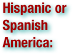

Hispanic America or Spanish America is the region comprising the American countries inhabited by Spanish-speaking populations. These countries have significant commonalities with each other and with Spain, whose colonies they formerly were. In all of these countries, Spanish is the main language, sometimes sharing official status with one or more indigenous languages (such as Guaraní, Quechua, Aymara, or Mayan), or English (in Puerto Rico). Roman Catholicism is the predominant religion, as well. Hispanic America differs from Ibero-America in that the latter comprises Hispanic America and Brazil (formerly "Portuguese America"), and for some uses includes the Iberian Peninsula nations of Portugal and Spain. Hispanic America also contrasts with Latin America, which includes Hispanic America and Brazil and, depending on definition, also the former French colonies in the Western Hemisphere. (wikipedia.org. Accessed August 6, 2011.)

Junta Grande is the most common name for the executive government of the United Provinces of the Río de la Plata (modern-day Argentina), that followed the incorporation of provincial representatives into the Primera Junta (First Junta). . . The Primera Junta, created on May 25 1810 out of the May Revolution, was meant to be a provisional government until a Junta representative of all the cities of the Viceroyalty of the Río de la Plata was integrated. Reactions from the provinces, however, were not homogeneous. Some of them recognized the Buenos Aires Junta and the outcome of the events of the May Revolution, while others sought to exercise exclusive control over their own affairs, and still others continued to recognize the Regency Council in Spain. Thus, in order to avoid royalists taking political advantage of the situation, the Buenos Aires Junta sought to quickly assert its power. On May 27 1810, it delivered messages to every the Viceroyalty municipal councils, asking them to elect representatives to join the Junta at Buenos Aires. By early December, most delegates had already arrived in the capital city, and they were asking for their effective incorporation into the governing body (that was being held up due to the infighting between centralists led by the Junta's Secretary of War Mariano Moreno, and federalists led by the Junta's President, Cornelio Saavedra). Ultimately, Saavedra managed to orchestrate Moreno's resignation and on December 18 1810, the Junta Grande was at last established. It governed until December 1811, when it was replaced as the executive authority by the First Triumvirate. However, reorganized as a Conservative Junta, it retained some controlling functions over the Triumvirate. (wikipedia.org. Accessed August 6, 2011.)

Latin America is a region of the Americas where Romance languages (i.e., those derived from Latin) – particularly Spanish and Portuguese, and variably French – are primarily spoken. Latin America has an area of approximately 21,069,500 km² (7,880,000 sq. mi), almost 3.9% of the Earth's surface or 14.1% of its land surface area. As of 2010, its population was estimated at more than 590 million and its combined GDP at 5.16 trillion United States dollars.The Latin American expected economic growth rate is at about 5.7% for 2010 and 4% in 2011. (wikipedia.org. Accessed August 6, 2011.)
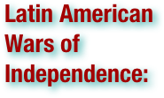

The Latin American Wars of Independence were the various revolutions that took place during the late 18th and early 19th centuries and resulted in the creation of a number of independent countries in Latin America. These revolutions followed the American and French Revolutions, which had profound effects on the Spanish, Portuguese and French colonies in the Americas. Haiti, a French slave colony, was the first to follow the United States to independence, during the Haitian Revolution, which lasted from 1791 to 1804. Thwarted in his attempt to rebuild a French empire in North America, Napoleon Bonaparte turned his armies to Europe, invading and occupying many countries, including Spain and Portugal in 1808. The Peninsular War, which resulted from this occupation, caused Spanish Creoles in Spanish America to question their allegiance to the metropole, stoking independence movements that culminated in bloody wars of independence, which lasted almost two decades. At the same time, the Portuguese monarchy relocated to Brazil during Portugal's French occupation. After the royal court returned toLisbon, the prince regent, Pedro, remained in Brazil and in 1822 successfully declared himself emperor of a newly independent Brazil. (wikipedia.org. Accessed August 6, 2011.)

Libertadores refers to the principal leaders of the Latin American wars of independence from Spain. They are named that way in contrast with the Conquistadors, who were so far the only Spanish peoples recorded in the South American history. They were largely bourgeois, criollos (local-born people of European, mostly of Spanish or Portuguese, ancestry) influenced by liberalism and in most cases with military training in the metropole (mother country). The four liberators identified as among the most prominent by both Robert Harvey and Felipe Pigna are: Francisco de Miranda, Simón Bolívar, José de San Martín, and Bernardo O'Higgins. (wikipedia.org. Accessed August 6, 2011.)

The Federal League or League of Free Peoples was a confederal state based around Montevideo from 1815 to 1820. It extended over the territories of present-day Uruguay and the Argentine littoral Provinces. The Federal League was organized after the breakup of the Spanish Viceroyalty of the Río de la Plata and following the Provinces' rejection of the centralist Supreme Directorship, based in Buenos Aires. The federalist idea that inspired its creation was strongly advocated by José Gervasio Artigas. The league was dissolved after facing attacks from both the invading Brazilian-Portuguese empire and the Buenos Aires centralist governments of the United Provinces of the Río de la Plata. Although the country was intended to extend throughout Argentina, it was centered around Montevideo and the Eastern Bank of the Uruguay river. Therefore, it is usually considered a predecessor state of modern Uruguay. (wikipedia.org. Accessed August 6, 2011.)

The Little War or Small War, (1879–1880) was the second of three conflicts in the Cuban War of Independence. It followed the Ten Years' War of 1868–1878 and preceded the War of '95, itself sometimes called the Cuban War of Independence, which bled into the Spanish-American War, ultimately resulting in Cuban independence. It started on August 26, 1879, and after some minor successes, the war ended in rebel defeat by September 1880. (wikipedia.org. Accessed August 6, 2011.)

The first uprising against Spanish rule took place in 1809, but only in 1822 did Ecuador fully gain independence and became part of the Federation of Gran Colombia, from which it withdrew in 1830. Luz de America was the nickname given to Ecuador's capital Quito which saw the first revolt against Spanish occupation. The nickname served the urge for the call of independence that was heard around the continent, and inspired the eventual domino collapse of the crown throughout Latin America. (wikipedia.org. Accessed August 6, 2011.)

The May Revolution was a week-long series of events that took place from May 18 to 25, 1810, in Buenos Aires, capital of theViceroyalty of the Río de la Plata, a Spanish colony that included roughly the territories of present-day Argentina, Bolivia, Paraguay, and Uruguay. The result was the ousting of Viceroy Baltasar Hidalgo de Cisneros and the establishment of a local government, the Primera Junta (First Junta), on May 25. These events are commemorated in Argentina as "May Week". The May Revolution was a direct reaction to Spain's Peninsular War of the previous two years. In 1808 King Ferdinand VII of Spain, abdicated in favor of Napoleon, who granted the throne to his brother, Joseph Bonaparte. A Supreme Central Junta led resistance to Joseph's government and the French occupation of Spain, but eventually suffered a series of reversals that resulted in the loss of the northern half of the country. On February 1, 1810, French troops took Seville and gained control of most of Andalusia. The Supreme Junta retreated to Cadiz and dissolved itself in favor of a Council of Regency of Spain and the Indies. News of these events arrived in Buenos Aires on May 18, when British ships brought newspapers from Spain and the rest of Europe. Viceroy Cisneros tried to conceal the news in order to maintain the political status quo, but a group of criollo lawyers and military officials organized an open cabildo (an extraordinary meeting of notables of the city) on May 22 to decide the future of the Viceroyalty. Delegates denied recognition to the Council of Regency in Spain and established a junta to govern in place of Cisneros, since the government that appointed him Viceroy no longer existed. To maintain a sense of continuity, Cisneros was initially appointed President of the Junta. However, this caused a great deal of popular unrest, so Cisneros resigned under pressure on May 25. The newly formed Primera Junta, which had initially only included representatives from Buenos Aires, then invited other cities of the Viceroyalty to send delegates to join them. This resulted in the outbreak of war between the regions that accepted the outcome of the events at Buenos Aires and those that did not. The May Revolution is considered the starting point of the Argentine War of Independence, although no formal declaration of independence was issued at the time and the Primera Junta continued to govern in the name of the deposed king Ferdinand VII. As similar events occurred in many other cities of Spanish South America when news of the dissolution of the Spanish Supreme Central Junta arrived, the May Revolution is also considered one of the starting points for the Spanish American wars of independence. Historians today debate whether the revolutionaries were truly loyal to the Spanish crown, or whether the declaration of fidelity to the king was a necessary ruse to conceal the true objective (to achieve independence) from a population that was not yet ready to accept such a radical change. A formal declaration of independence was finally issued at the Congress of Tucumán on July 9, 1816. (wikipedia.org. Accessed August 6, 2011.)

Mestizo is a term traditionally used in Latin America and Spain for people of mixed European and Native American heritage or descent. The term originated as a racial category in the Casta system that was in use during the Spanish empire's control of their American colonies; it was used to describe those who had one European-born parent and one who was a member of an indigenous American population. In the Casta system mestizos had fewer rights than European born persons called "Peninsular", and "Criollos" who were persons born in the New World of two European-born parents, but more rights than "Indios" and "Negros". During the colonial period, mestizos quickly became the majority group in much of what is today Latin America, and when the colonies started achieving independence from Spain, the mestizo group often became dominant. In some Latin American countries, such as Mexico, the concept of the "mestizo" became central to the formation of a new independent identity that was neither wholly Spanish nor wholly indigenous and the word mestizo acquired its current double meaning of mixed cultural heritage and actual racial descent. (wikipedia.org. Accessed August 6, 2011.)


The Mexican War of Independence (1810–1821) was an armed conflict between the people of Mexico and the Spanish colonial authorities which started on 16 September 1810. The movement, which became known as the Mexican War of Independence, was led by Mexican-born Spaniards, Mestizos and Amerindians who sought independence from Spain. It started as an idealistic peasants' rebellion against their colonial masters, but ended as an unlikely alliance between Mexican ex-royalists and Mexican guerrilla insurgents. (wikipedia.org. Accessed August 6, 2011.)


The Monroe Doctrine is a policy of the United States introduced on December 2, 1823. It stated that further efforts by European countries to colonize land or interfere with states in the Americas would be viewed as acts of aggression requiring U.S. intervention (however, the wording referred to the entire Western Hemisphere, which actually includes much of Europe and Africa). The doctrine was introduced by President Monroe when he was enraged at the actions being executed around him. The Monroe Doctrine asserted that theAmericas were not to be further colonized by European countries but that the United States would neither interfere with existing European colonies nor meddle in the internal concerns of European countries. The Doctrine was issued at a time when many Latin American countries were on the verge of becoming independent from the Spanish Empire. The United States, reflecting concerns raised by Great Britain, ultimately hoped to avoid having any European power take over Spain's colonies. The US President, James Monroe, first stated the doctrine during his seventh annual State of the Union Address to Congress. It became a defining moment in the foreign policy of the United States and one of its longest-standing tenets, and would be invoked by many U.S. statesmen and several U.S. presidents, including Theodore Roosevelt, Calvin Coolidge, Herbert Hoover, John F. Kennedy, Ronald Reagan and others. It would have been nearly impossible for Monroe to envision that its intent and impact would persist with only minor variations for almost two centuries. Its primary objective was to free the newly independent colonies of Latin America from European intervention and control (thus ensuring US national security). The doctrine put forward that the New World and the Old World were to remain distinctly separate spheres of influence, for they were composed of entirely separate and independent nations. (wikipedia.org. Accessed August 6, 2011.)
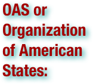

The Organization of American States (OAS, or, as it is known in the three other official languages, OEA) is a regional international organization, headquartered in Washington, D.C., United States. Its members are the thirty-five independent states of the American Continent. The notion of closer hemispheric union in America was first put forward by Simón Bolívar who, at the 1826 Congress of Panama, proposed creating a league of American republics, with a common military, a mutual defense pact, and a supranational parliamentary assembly. This meeting was attended by representatives of Gran Colombia(comprising the modern-day nations of Colombia, Ecuador, Panama, and Venezuela), Peru, the United Provinces of Central America, and Mexico, but the grandly titled "Treaty of Union, League, and Perpetual Confederation" was ultimately ratified only by Gran Colombia. Bolívar's dream soon floundered with civil war in Gran Colombia, the disintegration of Central America, and the emergence of national rather than continental outlooks in the newly independent American republics. Bolívar's dream of American unity was meant to unify Latin American nations against imperial domination by external power. The pursuit of regional solidarity and cooperation again came to the forefront in 1889–90, at the First International Conference of American States. Gathered together in Washington, D.C., 18 nations resolved to found the International Union of American Republics, served by a permanent secretariat called the Commercial Bureau of the American Republics (renamed the "International Commercial Bureau" at the Second International Conference in 1901–02). These two bodies, in existence as of 14 April 1890, represent the point of inception to which today's OAS and its General Secretariat trace their origins. (wikipedia.org. Accessed August 6, 2011.)

The period between 1810 and 1816 in the New Kingdom of Granada (today Colombia) was marked by such intense conflicts over the nature of the new government or governments that it became known as la Patria Boba (the Foolish Fatherland). Constant fighting between federalists and centralists gave rise to a prolonged period of instability. Similar developments can be seen at the same time in the United Provinces of the Río de la Plata. Each province, and even some cities, set up its own autonomous junta, which declared themselves sovereign from each other. (wikipedia.org. Accessed August 6, 2011.)


Patria Nueva was a period in the history of Chile which started with the victory of Ejército de los Andes and the Batlle of Chacabuco, on 12 February 1817 and finished with the abdication of Bernardo O'Higgins, in 1823. (wikipedia.org. Accessed August 6, 2011.)

Patria Vieja, (Old Fatherland) refers to a time period in the History of Chile occurring between the First Junta of the Government (September 18, 1810) and the Disaster of Rancagua (October 1, 1814). This period was characterized by the transformation from a movement of temporary autonomy to one of total independence. Two things that stood out during this period were the political prominence of the Carrera brothers, especially José Miguel Carrera and the army battles headed by Bernardo O'Higgins as General. (Battle of Membrillar, Battle of Yerbas Buenas, and Battle of El Roble). During this time a Government Junta of Chile as well as a National Congress were organized to administer the country during the imprisonment of the king. The Congress passed a law decreeing Liberty of the Womb, which stated that all children of slaves born on Chilean soil from that point onwards would be free. In 1812, the first constitutional decree was passed, which agreed to recognize the king if he accepted certain constitutional regulations. (wikipedia.org. Accessed August 6, 2011.)

The Peninsular War was a war between France and the allied powers of Spain, the United Kingdom, and Portugal for control of the Iberian Peninsula during theNapoleonic Wars. The war began when French and Spanish armies crossed Spain and invaded Portugal in 1807. Then, in 1808, France turned on its ally, Spain. The war lasted until the Sixth Coalition defeated Napoleon in 1814. The conflict is regarded by some historians as one of the first national wars and is also significant for the emergence of large-scale guerrilla warfare, from which the English language borrowed the word. The French occupation destroyed the Spanish administration, which fragmented into quarreling provincial juntas. In 1810, a reconstituted national government fortified itself in Cádiz and proved unable to recruit, train, or equip effective armies due to being under siege. British and Portuguese forces secured Portugal, using it as a secure position from which to launch campaigns against the French army while Spanish guerrilleros bled the occupiers. Combined, the regular and irregular allied forces prevented Napoleon's marshals from subduing the rebellious Spanish provinces. The many years of fighting in Spain gradually wore down France's famous Grande Armée. While the French armies were often victorious in battle, their communications and supplies were severely tested and their units frequently cut off, harassed, or overwhelmed by partisans. The Spanish army, though beaten and driven to the peripheries, could not be stamped out and continued to hound the French relentlessly. The constant threatening presence of a British force under Arthur Wellesley, which became the most experienced and steady force in the British army, guarded Portugal and campaigned against the French in Spain alongside the reformed Portuguese army. Allied to the British, the demoralized Portuguese army underwent extensive reorganizing, retraining and refitting under the command of British General William Carr Beresford, appointed commander-in-chief of the Portuguese forces by the exiled Portuguese Royal family, and fought as part of a combined Anglo-Portuguese army under Wellington. In 1812, as Napoleon embarked upon an invasion of Russia which ended in disaster, a combined allied army under Arthur Wellesley pushed into Spain and took Madrid. Marshal Soult led the exhausted and demoralized French forces in a fighting withdrawal across the Pyrenees and into France over the winter of 1813-14. War and revolution against Napoleon's occupation led to the Spanish Constitution of 1812, later a cornerstone of European liberalism. The burden of war destroyed the social and economic fabric of Portugal and Spain and ushered in an era of social turbulence, political instability, and economic stagnation. Devastating civil wars between liberal and absolutist factions, led by officers trained in the Peninsular War, persisted in Iberia until 1850. The cumulative crises and disruptions of invasion, revolution, and restoration led to the independence of many of Spain's American colonies and the independence of Brazil from Portugal. (wikipedia.org. Accessed August 6, 2011.)

In the colonial caste system of Spanish America, a peninsular was a Spanish-born Spaniard or mainland Spaniard residing in the New World, as opposed to a person of full Spanish descent born in the Americas or Philippines (known as criollos). The word "peninsular" makes reference to the Iberian Peninsula where Spain is located. Offices of the Americas and Philippines were held by peninsulares. Apart from the distinction of peninsulares from criollos, the castas system distinguished also mestizos (of mixed Spanish and Amerindian ancestry), mulatos (of mixed Spanish and black ancestry), indios, zambos (mixed Amerindian and black ancestry) and finally blacks. In some places and times, such as during the wars of independence, peninsulares were called deprecatively godos (for the "Visigoths," who had ruled Spain), or in Mexico, gachupines or gauchos. Colonial officials at the highest levels arrived from Spain to fulfill their duty to govern Spanish colonies in Latin America. Often, the peninsulares had large quantities of land. They defended Cádiz's monopoly on trade, upsetting the criollos, who turned to contraband with British and French colonies, especially in areas away from the main ports of call for the Flota de Indias. They worked to preserve Spanish power and acted as agents of patrol, in certain cases. In colonial social hierarchy, the peninsulares were nominally at the top, followed by criollos, who developed a fully-entrenched powerful local aristocracy during the seventeenth and eighteenth century. In the French Revolution, the peninsulares were generally conservative. (wikipedia.org. Accessed August 6, 2011.)

The Peru–Bolivian Confederation (or Confederacy) was a short-lived confederate state that existed in South America between 1836 and 1839. Its first and only head of state, titled Supreme Protector, was the Bolivian president, Marshal Andrés de Santa Cruz. The Confederation was a loose union between the states of Peru (by this time divided into a Republic of North Peru and a Republic of South Peru, which included the capital Tacna) and Bolivia. Since its inception the confederation was seen as threat by influential politicians in the neighboring countries, and its support for Chilean and Argentine dissidents in exile caused Argentina and Chile to wage war separately against the confederation. The Confederation collapsed after being defeated by a combined Chilean and Peruvian dissident force in what is now known as the War of the Confederation. (wikipedia.org. Accessed August 6, 2011.)

The Peruvian War of Independence was a series of military conflicts beginning in 1809 that culminated in the proclamation of the independence of Peru by José de San Martín on July 28, 1821. During the previous decade Peru had been a stronghold for royalists, who fought those in favor of independence in Upper Peru, Quito and Chile. The wars of independence took place with the background of the 1780-1781 uprising by indigenous leader Túpac Amaru II and the earlier removal of Upper Peruand the Río de la Plata regions from the Viceroyalty of Peru. Because of this the viceroy often had the support of the "Lima oligarchy," who saw their elite interests threatened by popular rebellion and were opposed to the new commercial class in Buenos Aires. (wikipedia.org. Accessed August 6, 2011.)

Physiocracy is an economic theory developed by the Physiocrats, a group of economists who believed that the wealth of nations was derived solely from the value of "land agriculture" or "land development." Their theories originated in France and were most popular during the second half of the 18th century. Physiocracy is perhaps the first well-developed theory of economics. The movement was particularly dominated by François Quesnay (1694–1774) and Anne-Robert-Jacques Turgot (1727–1781). It immediately preceded the first modern school, classical economics, which began with the publication of Adam Smith's The Wealth of Nations in 1776. The most significant contribution of the Physiocrats was their emphasis on productive work as the source of national wealth. This is in contrast to earlier schools, in particular mercantilism, which often focused on the ruler's wealth, accumulation of gold, or the balance of trade. A chief weakness from the viewpoint of modern economics is that the theory only considered agricultural labor to be valuable. Physiocrats viewed the production of goods and services as consumption of the agricultural surplus, while modern economists consider these to be productive activities which add to national income. Historian David B. Danbom explains, "The Physiocrats damned cities for their artificiality and praised more natural styles of living. They celebrated farmers." They called themselves économistes, but are generally referred to as physiocrats in order to distinguish them from the many schools of economic thought that followed them. (wikipedia.org. Accessed August 6, 2011.)

The Portuguese Empire, also known as the Portuguese Overseas Empire or the Portuguese Colonial Empire, was the first global empire in history. In addition, it was the longest-lived of the modern European colonial empires, spanning almost six centuries, from the capture of Ceuta in 1415 to the handover of Macau in 1999. The empire spread throughout a vast number of territories that are now part of 49 different sovereign states. Portuguese sailors began exploring the coast of Africa in 1419, using recent developments in navigation, cartography and maritime technology such as the caravel, in order that they might find a sea route to the source of the lucrative spice trade. In 1488, Bartolomeu Dias rounded the Cape of Good Hope, and in 1498, Vasco da Gama reached India. In 1500, by an accidental landfall on the South American coast for some, by the crown's secret design for others, Pedro Álvares Cabral discovered Brazil. Over the following decades, Portuguese sailors continued to explore the coasts and islands of East Asia, establishing forts and factories as they went. By 1571, a string of outposts connected Lisbon to Nagasaki along the coasts of Africa, the Middle East and Asia. This commercial network brought great wealth to Portugal. Between 1580 and 1640 Portugal became the junior partner to Spain in the union of the two countries' crowns. Though the empires continued to be administered separately, Portuguese colonies became the subject of attacks by three rival European powers hostile to Spain and envious of Iberian successes overseas: the Netherlands, Britain andFrance. With its smaller population, Portugal was unable to effectively defend its overstretched network of trading posts, and the empire began a long and gradual decline. Significant losses to the Dutch in Portuguese India and Southeast Asia during the 17th century brought an end to the Portuguese trade monopoly in the Indian Ocean. Brazil became Portugal's most valuable colony until, as part of the wave of independence movements that swept the Americas during the early 19th century, it broke away in 1822. Portugal's Empire was reduced to its colonies on the African coastline (which were expanded inland during the Scramble for Africa in the late 19th century), East Timor, and enclaves in India and Macau. (wikipedia.org. Accessed August 6, 2011.)

The Primera Junta or First Assembly is the most common name given to the first independent government of Argentina. It was created on 25 May 1810, as a result of the events of the May Revolution. The Junta initially had representatives from only Buenos Aires. When it was expanded, as expected, with the addition of the representatives from the other cities of the Viceroyalty of the Río de la Plata, it became popularly known instead as the Junta Grande. The Junta operated at El Fuerte, which had been used since 1776 as a residence by the Viceroys. (wikipedia.org. Accessed August 6, 2011.)

The period of Brazilian history from 1889 to 1930 is commonly called the República Velha (Old Republic). The República Velha ended in 1930 with a military coup that installed a dictator. (wikipedia.org. Accessed August 6, 2011.)

A revolution (from the Latin revolutio, "a turn around") is a fundamental change in power or organizational structures that takes place in a relatively short period of time. Its use to refer to political change dates from the scientific revolution occasioned by Copernicus' famous De Revolutionibus Orbium Coelestium. Aristotle described two types of political revolution: Complete change from one constitution to another; and Modification of an existing constitution. Revolutions have occurred through human history and vary widely in terms of methods, duration, and motivating ideology. Their results include major changes in culture, economy, and socio-political institutions. Scholarly debates about what does and does not constitute a revolution center around several issues. Early studies of revolutions primarily analyzed events in European history from a psychological perspective, but more modern examinations include global events and incorporate perspectives from several social sciences, including sociology and political science. Several generations of scholarly thought on revolutions have generated many competing theories and contributed much to the current understanding of this complex phenomenon. (wikipedia.org. Accessed August 6, 2011.)

The royalists were the American and European supporters of the various governing bodies of the Spanish Monarchy, during the Spanish American wars of independence, which lasted from 1808 to 1826. In the early years of the conflict, when King Ferdinand VII was captive in France, royalists supported the authority in the Americas of the Supreme Central Junta of Spain and the Indies and the Cádiz Cortes that ruled in the King's name during the Peninsular War. After the restoration of Ferdinand VII in 1814, royalists supported his claim to rule Spanish America, but were split between those that supported his insistence to rule under traditional law and liberals, who sought to reinstate the reforms enacted by the Cádiz Cortes. (wikipedia.org. Accessed August 6, 2011.)
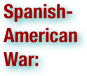

The Spanish–American War was a conflict in 1898 between Spain and the United States. It ended with the Americans defeating the Spaniards. Revolts against Spanish rule had been endemic for decades in Cuba and were closely watched by Americans; there had been war scares before, as in the Virginius Affair in 1873. By 1897–98, American public opinion grew angrier at reports of Spanish atrocities. After the mysterious sinking of the American battleship Maine in Havana harbor, political pressures from the Democratic Party pushed the government of President William McKinley, a Republican, into a war McKinley had wished to avoid. Compromise proved impossible, resulting in an ultimatum sent to Madrid demanding it surrender control of Cuba immediately, which was not accepted. First Madrid, then Washington, formally declared war. Although the main issue was Cuban independence, the ten-week war was fought in both the Caribbean and the Pacific. A series of one-sided American naval and military victories followed on all fronts, owing to their numerical superiority in most of the battles and despite the good performance of some of the Spanish infantry units. The result was the 1898 Treaty of Paris—which was favorable to the U.S.—followed by temporary American control of Cuba and indefinite colonial authority overPuerto Rico, Guam and the Philippines. The defeat and the collapse of the Spanish Empire was a profound shock to Spain's national psyche. The victor gained several island possessions spanning the globe and a rancorous new debate over the wisdom of imperialism. (wikipedia.org. Accessed August 6, 2011.)
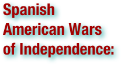

The Spanish American wars of independence were the numerous wars against Spanish rule in Spanish America that took place during the early 19th century, from 1808 until 1829, directly related to the Napoleonic French invasion of Spain. The conflict started with short-lived governing juntas established in Chuquisaca and Quito opposing the composition of the Supreme Central Junta of Seville. When the Central Junta fell to the French, numerous new Juntas appeared all across the Americas, eventually resulting in a chain of newly independent countries stretching from Argentina and Chile in the south, to Mexico in the north. After the death of the king Ferdinand VII, in 1833, only Cuba and Puerto Rico remained under Spanish rule, until the Spanish–American War in 1898. These conflicts can be characterized both as civil wars and wars of national liberation, since the majority of the combatants were Spanish Americans on both sides, and the goal of the conflict for one side was the independence of the Spanish colonies in the Americas. In addition, the wars were related to the other Latin American wars of independence in Haiti and Brazil. (Brazil's independence shared a common starting point with Spanish America's, since both were triggered by Napoleon's invasion of the Iberian Peninsula, when the Portuguese royal family resettled in Brazil.) The war in Europe, and the resulting absolutist restoration ultimately convinced the Spanish Americans of the need to establish independence from the mother country, so various revolutions broke out in Spanish America. Moreover, the process of Latin American independence took place in the general political and intellectual climate that emerged from the Age of Enlightenment and that influenced all of the so-called Atlantic Revolutions, including the earlier revolutions in the United States and France. Nevertheless, the wars in, and the independence of, Spanish America were the result of unique developments within the Spanish Monarchy. (wikipedia.org. Accessed August 6, 2011.)
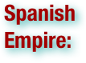

The Spanish Empire consisted of the territories and colonies administered directly by Spain in Europe, the Americas, Africa, Asia and Oceania. It originated during the Age of Exploration and was therefore one of the first global empires. At the time of Habsburgs, Spain reached the peak of its world power. It lasted from the 15th century through — in the case of its African holdings — the latter portion of the 20th century. After the War of the Castilian Succession, Spain had emerged with a personally unified monarchy, by the marriage of the Catholic Monarchs or los Reyes Catolicos: the Queen of Castile and the King of Aragon. Rule was separate but internal and foreign policy was coordinated. In 1492, the Spanish monarchs completed the Reconquista with the incorporation of Granada to the Kingdom of Castile. That same year Christopher Columbus commanded the first Spanish exploratory voyage west across the Atlantic Ocean, leading to the Discovery of America and Europe's eventual colonial engagement in the New World. The Americas thereby became the focus of Spanish exploration and colonization. In the 16th century, Spain settled the Greater Antilles in the Caribbean, and took over large areas on mainland North and South America overrunning the Aztecs and Incas. The Spanish expedition of world circumnavigation started by Ferdinand Magellan in 1519, and completed byJuan Sebastian Elcano in 1522, achieved what Columbus had longed for, a westward route to Asia and the sought-after Spice Islands. In 1565 navigator Miguel Lopez de Legazpi arrived in Guam and the Philippine Islands establishing the Spanish East Indies. In addition to the overseas empire in America and Oceania, the Spanish Monarchy controlled several European territories (the Low Countries, the greater part of Italy, and some parts of modern France and Germany), and a number of coastal strongholds in Africa. By the 17th century, Spain controlled an empire on a scale and world distribution that had never been approached by its predecessors. Spain's European possessions were given up at the conclusion of the War of the Spanish Succession in 1713, but Spain retained its vast overseas empire. In 1741, a massive victory over Britain at the Battle of Cartagena de Indias in modern day Colombia prolonged Spain's hegemony in the Americas until the 19th century. During the late 18th century, Spanish expeditions to the Pacific Northwest reached Canada and Alaska, resulting in a settlement on Vancouver Island and the discovery of several archipelagos and glaciers. The French occupation of Spain in 1808 under Napoleon cut off its American colonies temporarily, and a number of independence movements between 1810 and 1825 resulted in a chain of newly independent Spanish American republics in South and Central America. The remainder of Spain's then-four hundred year empire, namely Cuba, Puerto Rico, and the Spanish East Indies, continued under Spanish control until the end of the 19th century, when most of these territories were annexed by the United States after the Spanish-American War. Spain sold its remaining Pacific islands to Germany in 1899. Therefore, at the turn of the 20th century, Spain only held territories in Africa, namely Spanish Guinea,Spanish Sahara and Spanish Morocco, obtained during the Scramble for Africa, but they were relinquished from the mid 20th century due to the Decolonization of Africa. (wikipedia.org. Accessed August 6, 2011.)
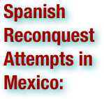

The Spanish reconquest attempts in Mexico were episodes of war in Mexico that were comprised in clashes between the newly born Mexican nation and Spain, mainly covered two periods first attempts from 1821 to 1825 and the defense of territorial waters and second period divided into two stages includes the Mexican expansion plan to take Cuba between 1826 and 1828 and the 1829 expedition of Spanish General Isidro Barradas on Mexican soil. Although the Spanish never regained the country they did damage the fledging economy. Mexico was devastated by 11 years of war of independence, the independentists never had a clear plan or bases to be followed in case of gaining independence. After independence, Mexico had a hectic political life, between the internal struggles for seeking better government system, the complete lack of treasure, the responsibility to control a country of over 4.5 million km² and rebellions that emerged in the country, avoided the Mexican government pay attention to the closeness that had Spain from Cuba to Mexico. (wikipedia.org. Accessed August 6, 2011.)

The Spanish Invasion of New Granada in 1815–1816 was part of the Spanish American wars of independence in South America. Shortly after the Napoleonic Wars ended, Ferdinand VII, recently restored to the throne in Spain, decided to send military forces to retake most of northern South American colonies, which had established autonomous juntas and independent states. . . In 1815, Spain sent to its most seditious colonies the strongest expeditionary force that it ever sent to the Americas up to that time. . . On learning of the arrival of the expeditionary force, republican leaders assumed various positions. Internal divisions, which had developed during the previous years of struggle, softened but still remained a considerable obstacle. In the end, they prevented a coordinated effort by the different factions, although there were some attempts to do so, such as under the United Provinces of New Granada. One significant factor in the disunity was that representatives of Great Britain and of the United States refused to grant political recognition and would not commit the sufficient amount of economic and military aid to successfully resist Morillo's force. In addition, the provinces themselves did not give each other much needed aid. Finally, several notable individuals, whose leadership would have been useful, decided to exile themselves, although other republican leaders did remain in the region and tried to reorganize it military and political activities in order to face the new threat. As a result of the internal conflicts in New Granada, Simón Bolívar, who had been acting under the authority of the United Provinces, left his command on May 8, 1815, after failing to subdue Cartagena in March in retaliation for its refusal to give him arms and men. Bolívar traveled to Jamaica and later Haiti, a small republic that had freed itself from French rule, where he and other independence leaders were given a friendly reception. Eventually, the growing exile community received money, volunteers and weapons from the Haitian president Alexandre Pétion, and resumed the struggle for independence in the remote border areas of both New Granada and Venezuela, where they established irregular guerrilla bands with the locals. This formed the basis from which the struggle to establish republics successfully spread towards the other areas of South America under Spanish control. (wikipedia.org. Accessed August 6, 2011.)

The Ten Years' War (1868–1878), also known as the Great War and the War of '68, began on October 10, 1868 when sugar mill owner Carlos Manuel de Céspedes and his followers proclaimed Cuba's independence from Spain. It was the first of three liberation wars that Cuba fought against Spain, the other two being the Little War (1879–1880) and the Cuban War of Independence (1895–1898). The final three months of the last conflict escalated to become the Spanish–American War. (wikipedia.org. Accessed August 6, 2011.)

Upper Peru was the region in the Viceroyalty of Peru, and after 1776, the Viceroyalty of the Río de la Plata, comprising the governorships of Potosí, La Paz, Cochabamba, Los Chiquitos, Moxos and Charcas (since renamed Sucre). It was governed by the Audiencia of Charcas. Following the Bolivian War of Independence, the region became an independent country and was renamed Bolivia in honor of Simón Bolívar. (wikipedia.org. Accessed August 6, 2011.)
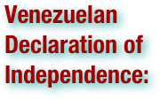

The Venezuelan Declaration of Independence is a statement adopted by a congress of Venezuelan provinces on July 5, 1811 through which Venezuelans made the decision to break away from the Spanish Crown in order to establish a new nation based on the premises of equality of individuals, abolition of censorship and dedication to freedom of expression. These principles were enshrined as a constitutional principal for the new nation and were radically opposed to the political, cultural, and social practices that had existed during three hundred years of colonization. Seven of the ten provinces belonging to the Captaincy General of Venezuela declared their independence and explained their reasons for this action, among them, that it was baneful that a small European nation ruled the great expanses of the New World, that America recovered its right to self-government after the abdications of Charles IV and Ferdinand VII at Bayonne, and that the political instability in Spain dictated that Venezuelans rule themselves, despite the brotherhood they shared with Spaniards. The three remaining provinces which did not take part in the Venezuelan congress opted to stay under Spanish rule. The declaration proclaimed a new nation called the American Confederacy of Venezuela and was mainly written by Juan Germán Roscio. It was ratified by Congress on July 7, 1811 and recorded in the Congress's Book of Minutes on August 17, 1811 in Caracas. The anniversary of this declaration is celebrated as Independence Day. The original Book of Minutes of the first Congress of Venezuela is in the Federal Legislative Palace in Caracas. (wikipedia.org. Accessed August 6, 2011.)

A viceroy is a royal official who runs a country, colony, or province (or state) in the name of and as representative of the monarch. The term derives from the Latin prefix vice-, meaning "in the place of" and the French word roi, meaning king. A viceroy's province or larger territory is called a viceroyalty. The adjective form is viceregal, less often viceroyal. A vicereine is a woman in a viceregal position, or a viceroy's wife. (wikipedia.org. Accessed August 6, 2011.)

The Viceroyalty of New Granada was the name given on 27 May 1717, to a Spanish colonial jurisdiction in northern South America, corresponding mainly to modern Colombia, Ecuador, Panama, and Venezuela. The territory corresponding to Panama was incorporated later in 1739. In addition to these core areas, the territory of the Viceroyalty of New Granada included Guyana, and parts of northwestern Brazil, northern Peru, Costa Rica and Nicaragua. (wikipedia.org. Accessed August 6, 2011.)

Created in 1542, the Viceroyalty of Peru (in Spanish, Virreinato del Perú) was a Spanish colonial administrative district that originally contained most of Spanish-ruled South America, governed from the capital of Lima. The Viceroyalty of Peru was one of the two Spanish Viceroyalties in the Americas from the sixteenth to the seventeenth centuries. However, the Spanish did not resist the Portuguese expansion of Brazil across the meridian. The Treaty of Tordesillas was rendered meaningless between 1580 and 1640 while Spain controlled Portugal. The creation of Viceroyalties of New Granada and Rio de la Plata (at the expense of Peru's territory) reduced the importance of Lima and shifted the lucrative Andean trade to Buenos Aires, while the fall of the mining and textile production accelerated the progressive decay of the Viceroyalty of Peru. Eventually, the viceroyalty would dissolve, as with much of the Spanish empire, when challenged by national independence movements at the beginning of the nineteenth century. These movements led to the formation of the modern-day republics of Peru, Chile, Colombia, Panamá, Ecuador, Bolivia, Paraguay, Uruguay and Argentina in the territories that at one point or another had constituted the Viceroyalty of Peru. (wikipedia.org. Accessed August 6, 2011.)
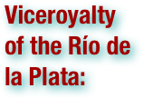

The Viceroyalty of the Río de la Plata, was the last and most short-lived Viceroyalty of the Spanish Empire in America. The Viceroyalty was established in 1776 out of several former Viceroyalty of Perú dependencies that mainly extended over the Río de la Plata basin, roughly the present day territories of Argentina, Bolivia, Paraguay and Uruguay. Buenos Aires, located on the western shore of the Río de la Plata estuary, opposite the Portuguese outpost of Colonia del Sacramento, was chosen as the capital. Usually considered one of the late Bourbon Reforms, its creation was both motivated on commercial grounds (Buenos Aires was by then a major spot for illegal trade), as well as on security concerns brought about by the growing interest some foreign powers had over the area, namely Great Britain and the Kingdom of Portugal. However, the Enlightening reforms proved counterproductive, or perhaps too late to quell the colonies' demands. In fact, the entire existence of the Viceroyalty was characterized by growing unrest and instability. Between 1780 and 1782, the Rebellion of Túpac Amaru II inspired a violent Aymara-led revolt across the Upper Peruhighlands, evidencing the huge resentment towards colonial authorities from both mestizos and indigenous populations. Twenty-five years later, two successive British attempts at conquering Buenos Aires and Montevideo were successfully repealed by Criollo-led defenses, enhancing their perceived autonomous capabilities as the Spanish troops were unable to help. In 1809, criollos and mestizos revolted against colonial authorities at La Paz and Chuquisaca, establishing revolutionary Juntas. Albeit short-lived themselves, they provided some strong theoretical basis for the legitimacy of the locally-based governing juntas that proved decisive at the 1810 May Revolution events that deposed Viceroy Cisneros at Buenos Aires. The revolution spread all over the Viceroyalty, except for Paraguay (which declared itself an independent nation in 1811) and the Upper Peru (which remained controlled by royalist troops from Lima, and was eventually re-incorporated into the Viceroyalty of Peru). Meanwhile, the Governor of Montevideo Francisco Javier de Elío, appointed as a new Viceroy by the Cortes of Cádiz in 1811, declared the Buenos Aires Junta seditious. However, after being defeated at Las Piedras he was only left in control of Colonia del Sacramento and Montevideo, so he returned to Spain on November 18 and resigned as Viceroy on January 1812. By 1814, as the patriots entered Montevideo, following a years-long siege, the Viceroyalty effectively ceased to exist. (wikipedia.org. Accessed August 6, 2011.)
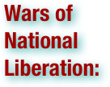

In Marxist terminology, wars of national liberation or national liberation revolutions are conflicts fought by oppressed nationalities against imperial powers to establish separate sovereign states for the subjugated nationality. From a Western point of view, these same wars are called insurgencies or rebellions, or more positively, wars of independence. More specifically, wars of national liberation refer to the wars fought since the October Revolution of 1917, especially those fought during the decolonization movement, and never those fought against a communist party. They were founded in guerrilla warfare or asymmetric warfare by national liberation movements, often with intervention from other states. This struggle became a major battlefield of the Cold War. According to political scientist Gérard Chaliand, guerrilla wars against European colonial powers were always a political success, although they may have been in some cases a military defeat. However, according to Gwynne Dyer, the tactics and strategies used against colonial powers were almost invariably failures when used against indigenous regimes. Some of these wars were supported by the Soviet Union, which claimed to be an anti-imperialist power even as it sought to replace western colonial governments with local communist parties operating under Soviet control. In January 1961 Soviet premier Nikita Khrushchev pledged support for "wars of national liberation" throughout the world. In fact, since the 1917 October Revolution, the revolutionary objectives of communism were shared by many anti-colonialist leaders, thus explaining the objective alliance between anti-colonialist forces and Marxism. The concept of "imperialism" itself had been which had theorized in Lenin's famous 1916 book, Imperialism, the Highest Stage of Capitalism. For example, Ho Chi Minh — who founded the Viet-Minh in 1930 and declared the independence of Vietnam on September 2, 1945, following the 1945 August Revolution — was a founding member of the French Communist Party (PCF) in 1921. Socialist and Communist led movements were in most cases politically organized as multi-party national liberation fronts. (wikipedia.org. Accessed August 6, 2011.)

The Western Hemisphere, also Western hemisphere or western hemisphere, is a geographical term for the half of the Earth that lies west of the Prime Meridian (which crosses Greenwich, London, United Kingdom), the other half being the eastern hemisphere. It is also used to specifically refer to the Americas (or the New World) and adjacent waters, while excluding other territories that lie west of the Prime Meridian (parts of Africa, Europe, Antarctica, and Asia); thus, it is sometimes referred to as the American hemisphere. (wikipedia.org. Accessed August 6, 2011.)

The United Provinces of New Granada was a country in South America from 1811 to 1816, a period known in Colombian history as the Patria Boba. It was formed from areas of the New Kingdom of Granada. The government was a federation with a parliamentary system, consisting of a weak executive and strong congress. The country was reconquered by Spain in 1816. (wikipedia.org. Accessed August 6, 2011.)